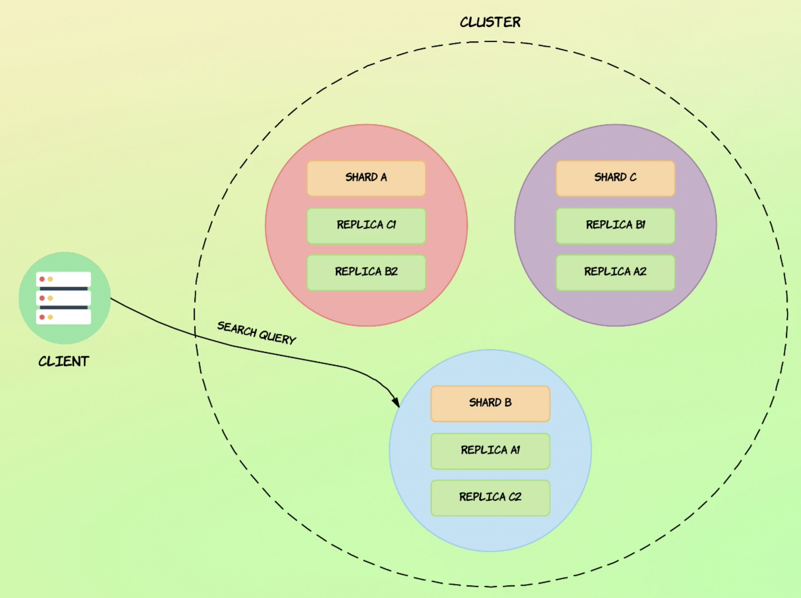
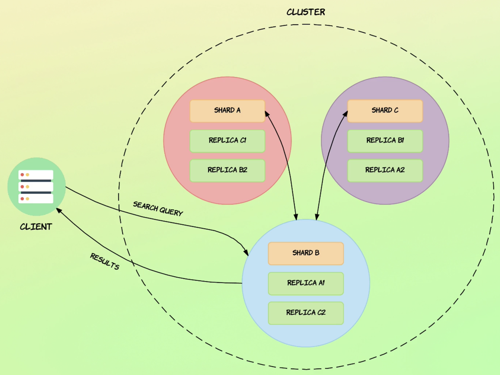
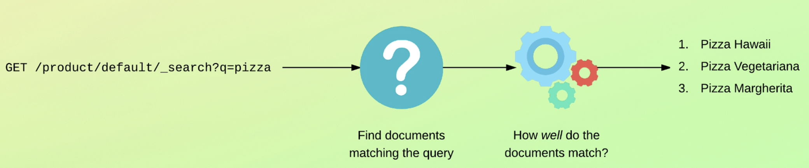
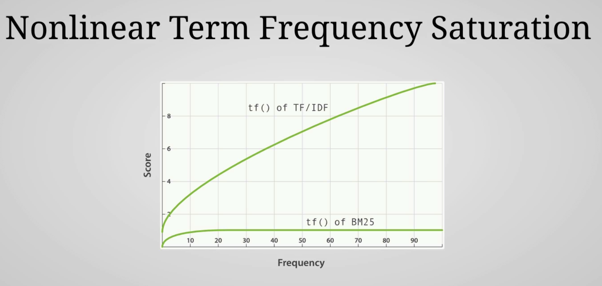

前言
這篇文章是出自於線上課程 Complete Guide to Elasticsearch 的所記錄的筆記。
這一篇文章主要介紹 ElasticSearch 搜尋資料的行為。
本文
搜尋 index 的資料
GET /<index>/_search針對特定內容來查詢
GET /<index>/_search?q=<field>:<value>
E.g.
1 | GET /analyzer_test/_search?q=description:dog |
查詢到的資料會依序相關性來決定分數
1 | { |
- 多個 query
1
GET /analyzer_test/_search?q=description:dog AND type:dachshund
Query DSL
Query 可以分成 Leaf query 及 Compound query，後者可能是前者所組合而成。
E.g.
基礎的 query 語法
1 | GET /analyzer_test/_search |
搜尋的運作模式
每個節點都可以扮演 coordinating node，當收到請求時，會將相同 index 但不同節點的 shard 整合起來，再回傳結果。


Score 相關性
ES 會先搜尋符合條件的資料，再將這些資料評分

常見的 relevance score 如下
- Term Frequence (TF): 根據 term 出現的次數來決定分數
- Inverse Document Frequency (IDF): 與 TF 相反
- Okapi BM25: TF + 上限(避免 stop word 高頻率出現)
- Field-length Norm: 字句越長，分數越低
新增參explain: true 來查看更詳細的 relevance score
1 | GET /analyzer_test/_search |
1 | { |
Term level query vs. Full text query
- term: 字句不會被分析
- full: 字句會被分析，預設使用 standard analyzer